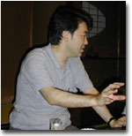
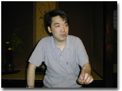
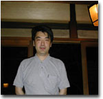
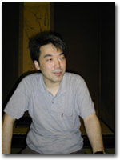

|
──本書は、橋爪さんのライフワークともいえる「にぎわいの仕掛人」シリーズの二冊目（一冊目は『にぎわいを創る
空間プランナー』長谷工総合研究所
平成七年）ということですが、どのようなきっかけで、こうした人びとの仕事を追いかけようと思われたのですか？
橋爪 私は普段、展示や装飾とったディスプレイ産業の人たちと仕事をしているんです。そうした現場で企画やプランニングにたずさわっている人たちには、この本で取りあげられているような、戦前からこの業界を担ってきた人たちについての認識がまったくない。つまり自分たちの先輩の創ってきた伝統というものを意識していないんです。いつも新しいもの、いままでなかったものを良しとして、海外でのあたらしい傾向を取り入れたり、自分でゼロから思いついたことを表現するという形で仕事をしている。けれども、５０年前や１００年前の日本にも同じような、なおかつ実にユニークな仕事をしていた人たちがいた。だから、そういう人たちのしてきた仕事との連続性のなかで、今の自分たちのしている仕事があるんだという認識があっても、いいのではないか思ったんです。
──現在、実際の仕事としてそれをする場合は、やはり商売ですから、どうしても「目先の新しさ」でつないでいってしまうんでしょうね。
橋爪 これが伝統工芸の世界なら、未来に継承すべき価値あるものとして見なされて、技術というものが保存され受け継がれてゆく。けれどもディスプレイや展示の業界の職人の技というものは、あんまり重くみられていない。私の親はペンキ職人なんですよ。職人の息子としても、そういう状況に考えるところがある。
日本のディスプレイ業界は、戦後、世界でも例のない業態を作ったんです。欧米は、もともと職人の仕事の権利が守られているので、例えば商店街の飾り付けの仕事はこの人がする、イベントの仕事はこの人がする、というように、地域の中で、職能と人とがきっちり定まっているんです。今の日本の場合はそれがない。例えば大手のデイスプレイ業者が、博覧会・博物館・百貨店・ショッピングモール・商店街、ありとあらゆるものをやっている。実際は下請けの会社の職人がやってるんだけど……。いゆわるゼネコンみたいな、あらゆる飾りつけを請け負う企業が存在するというのは、世界では例のない、特殊な状況なんです。

──日本では、どうしてそのような特殊な業態が発生したのでしょうか？
橋爪 それは、高度経済成長期に、そういう業態が効率が良かったということです。日本型の「総合ディスプレイ業」の誕生によって、職人の仕事も企業化し、近代化を果たすことができた。職人の地位もあがった。それは大事なことだと思います。でも、そうなることによって、地域ごとの個性が少し失われていった。戦前には、地域ごとに面白い親方がいて、その地域の特徴を上手く世の中にアピールしようとしていた。商店街の大売り出しにしても、地域によってやり方がちがっていて、そこで飾り付けやディスプレイをする人や会社もそれぞれその地域に密着していた。戦後とは明らかに違う状況だったんです。だから、戦前には地域ごとに面白い人が活躍していたということを記録しておかないといけない、と思ったわけです。それは職人の世界だけではなく、企画や宣伝の仕事にもあてはまる。
──たとえば油屋熊八さん。「山は富士、海は瀬戸内、湯は別府」という標注を富士山に立てたり、飛行機から大阪の上空に別府の宣伝ビラをまいたり（笑）。読んでいて思わず声をあげてしまうようなエピソードがありますね。
橋爪 妙な人がいるでしょう（笑）。天才ですよね。油屋熊八さんは、別府の温泉町をすごく面白いやり方で日本中に売り出した人。これほど自由にアイデアを出して人をもてなそうとしたり、これほど地域のＰＲに従事した人はめったにいません。そういう人の発想は、今でもあらゆる分野に通じるものなんじゃないか。そういう意味で、なるほどなあ、というふうに読まれたらいいと。
この人は、ホテル業界では非常に有名な人だし、別府で銅像になるような、郷土の誇りとなる人だけど、一般にはそれほど知られていない。「知る人ぞ知る」という感じ。ビジネスの分野での有名人や偉人伝はいっぱいあるけど、少しずれるとぜんぜん評価のされ方が違う。むしろそういう人の人生のなかにこそ、学ぶことがあるんやないかという気持ちが私の中にはあった。
──知る人ぞ知る偉人というのは、これまでもいろいろなメディアで取りあげられてきたとは思うんですが、やはりちゃんと制度化された分野の歴史の中に名を連ねていないと、どうしても忘れられていってしまいますね。
橋爪 人を喜ばせることに生き甲斐を見いだした人ということを横軸に置いて人を選んで、追いかけていったら、いろんな分野にまたがっていったということなんでしょう。彼らは、当然それで生計を立てていたから、ビジネスだったんだけど、それ以上に、みんなに喜んでもらったらそれで損してもいいや、という人もいたと思う。
──今でこそ、遊園地や博覧会やテーマパーク、ありとあらゆる楽しみのための場所があって、楽しくなりたいと思えばいつでもなれる。レジャーというものが飽和状態のようになっているから、私たちは逆に、楽しむという事に不感症になってしまっているような気がします。それに、今はいかにお金が儲かるかが第一で、もちろんそれは大事なことですけど、一人の人間の夢や情熱によって物事が動いてゆく様子が見えにくい。この本の中の人物たちの仕事を知って、結果的に人を楽しませられて、自分の街の活性化につながるなら損をしてもいいという心意気には、単純にすごいなあ、と思いました。

橋爪 この本に登場するのは、だいたい明治の後半から昭和のはじめにかけて活躍した人。この時期は、遊びかたの大転換期なんです。
明治後半から昭和のはじめにかけてというのは、世の中が工業化して都市人口／労働者人口が増えた。そうした中で、安い値段でとりあえず楽しい時間を過ごせるような場所と産業を作らなくてはならない状況が出て来た。もちろん、近代以前にも、悪所と呼ばれる芝居町や廓があったわけだけど。もっと広く大衆に向けられた形で「商品化された娯楽」……という言い方がいいのかどうかわからないけど、たとえば「一定の時間ここでこれだけ過ごし、充分楽しめた」という「遊びかた」をセットにしたような空間と施設が町の中にいっぱいできてくる……百貨店、遊園地、動物園、水族館、映画館、商店街などです。
そこで何がいちばん変わったのかというと、人が自由な時間をもった時に、ヒマだからボオーッとするとか、自分の趣味の時間に当てるというよりも、「ある時間内で、家族と一緒に映画を観てご飯を食べて」というような余暇の使い方がでてきたことです。
つまり「働く時間」というものが決められていく一方で、人々の生活の時間割りの中に「遊び」という項目が非常にわかりやすい形で現れた。もともと、真に自由な時間というものを持っているなら、その自由な時間を使ってどう過ごそうか、と人は考えるでしょうが、近代的な管理された時間の中で、自由な時間とはいいながら「勤勉に、一生懸命遊ぶ／遊ばされる」という状況が成立していったんです。この本で取りあげられている人たちは、そういうレジャー産業の草創期に活躍して、いろいろな遊びかたを提案した人たちなんです。そういう初期の人たちの発想のほうが実は大胆で、面白いことを提案している。
──お話をうかがっていると、橋爪さんの持っておられるテーマは、一定の分野に括りにくい、あらゆる分野からのアプローチが必要なお仕事ですね。もともとは建築のことを勉強されてきたのですよね。

橋爪 最初は、民家や明治の西洋建築などを調査する文化財保護の勉強をしていたんです。古い建物が好きで、そういう世界に入ったのだけれど、江戸時代初期のお寺の門とか、庄屋なんかの大きな町屋とか、煉瓦造りや石造りの立派な西洋建築ばかりが文化財になっていくのを見て、なぜなんだろう、と疑問をもったんです。自分にとって愛着があるのは、そんなに古いものではなくて、自分が生まれてからも身近にあった街角のタバコ屋さんや戦前のタイル貼りの銭湯とか映画館とか、自分と一緒に育ってきた身の回りの建物だった。でもそういうものはぜんぜん文化財になれへん。時がたてば、あっという間につぶされていくでしょう。３００年経ったお寺の門は重要文化財になって、築３０年とか築５０年の街角のタバコ屋は、なぜ誰も残せと言わずにどんどん消えてなくなっていくのか。
建築業界では、商業建築は圧倒的に評価が低いんです。有名な建築家が建てないし、所詮商売の世界のもので、５年とか１０年でどんどん建て替えられていくから古いものが少ない。何が立派で大事なのかというと、ようは金がかかったもの、有名な人が建てたてたものが評価されることになる。そういう考え方に対して、職人のせがれとしては、すごく反発をおぼえた。だから私は、誰もが残せという立派な建物の保存運動に力を入れるような人生は送りたくないと、自分が個人的な主観で大事に思えるものや愛着がもてるもののことを調べていこう、と思ったんです。
──そういう事を研究の対象としていて、学問の世界や、大学という制度の中にいること自体に矛盾をおぼえたりなどはしないのですか？
それはないです。なぜなら、私は現に、イベントや、博覧会の基本構想や、遊園地のリニューアルの企画、町づくりの事業提案なんかにかかわっていて、自分自身がそういう現場で生きてるんです。大学に籍を置いてはいますけど、気分は職人です。しかも、もともとは工学部だったのが、今教えているのは文学部で、ここに至るまで流れ流れてきた、渡りの職人のような気持ちでいます（笑）。
──勉強しているだけじゃないんですね。
鶴見俊輔さんなどの影響もあるけれど、私は研究者として、学会や専門領域といったある枠組みのなかでずっとやっていくつもりはさらさらない。ずっと横断的に、いろいろ人から学びながら日々考えていくという人生を選択したつもりなので、学生さんにある固まった知識を教えるという教育者としては、私は全然ダメです（笑）。建築学や都市計画なんかを勉強してきたけど、社会学とか、文化人類学とか、ぜんぜん違う分野の先生方と話をしたり、研究者ではない企業の人たちと勉強会をしながら、一歩一歩、自分の考えを深めようとしてきたわけなので、大学に籍を置いてはいるけど、根底には民間学者だという気持ちがある。大学の先生ではなくて、学者であると。前に「学ぶ者と書いて学者と読む」と鶴見先生がおっしゃった。これや！ 生涯学び続けるんや、と思った。だから、このシリーズを続けるなら、七十歳超えたくらいで、橋爪紳也が何を作ってきたか、ということを書こうと（笑）。自分の人生が出てきて、それを最後に絶筆にしようと思ってます（笑）。

橋爪紳也（はしづめ・しんや）
一九六〇年大阪生まれ。京都大学工学部建築学科卒業。同大学院および大阪大学大学院工学研究科博士課程修了。現在、大阪市立大学大学院文学研究科アジア都市文化学教室助教授、工学博士。建築史・都市文化論専攻。著書は『明治の迷宮都市 東京・大阪の遊楽空間』（平凡社）、『化物屋敷』（中公新書）、『世紀末盛り場考』（共著・日本経済新聞社）、『祝祭の帝国 花電車・凱旋門・杉の葉アーチ』『日本の遊園地』（講談社）、『博覧会見物』（学芸出版社）など多数。
|